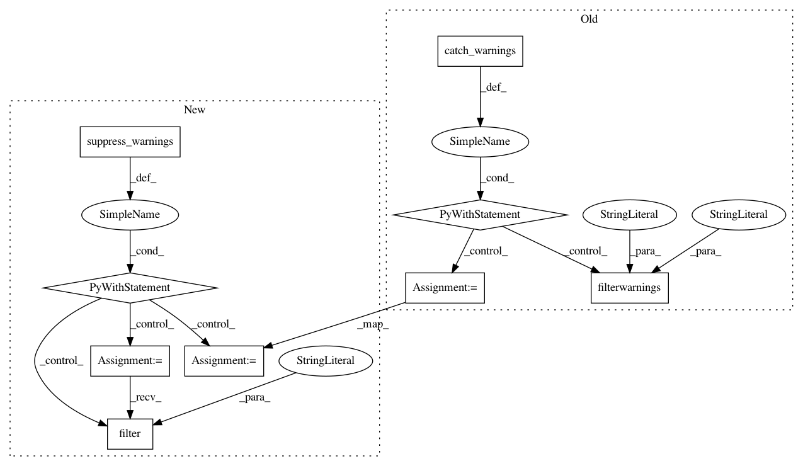

1c880c79459a63c8e36f48966142aea56626818e,scipy/sparse/csgraph/tests/test_graph_components.py,,test_cs_graph_components,#,10
Before Change
def test_cs_graph_components():
D = np.eye(4, dtype=bool)
with warnings.catch_warnings():
warnings.filterwarnings("ignore",
message="`cs_graph_components` is deprecated")
n_comp, flag = csgraph.cs_graph_components(csr_matrix(D))
assert_(n_comp == 4)
assert_equal(flag, [0, 1, 2, 3])
D[0, 1] = D[1, 0] = 1
n_comp, flag = csgraph.cs_graph_components(csr_matrix(D))
assert_(n_comp == 3)
assert_equal(flag, [0, 0, 1, 2])
// A pathological case...
D[2, 2] = 0
n_comp, flag = csgraph.cs_graph_components(csr_matrix(D))
assert_(n_comp == 2)
assert_equal(flag, [0, 0, -2, 1])
if __name__ == "__main__":
run_module_suite()
After Change
D[0, 1] = D[1, 0] = 1
with suppress_warnings() as sup:
sup.filter(DeprecationWarning, "`cs_graph_components` is deprecated!")
n_comp, flag = csgraph.cs_graph_components(csr_matrix(D))
assert_(n_comp == 3)
assert_equal(flag, [0, 0, 1, 2])
// A pathological case...
In pattern: SUPERPATTERN
Frequency: 3
Non-data size: 9
Instances
Project Name: scipy/scipy
Commit Name: 1c880c79459a63c8e36f48966142aea56626818e
Time: 2017-07-10
Author: cdouglass256@gmail.com
File Name: scipy/sparse/csgraph/tests/test_graph_components.py
Class Name:
Method Name: test_cs_graph_components
Project Name: scipy/scipy
Commit Name: bf2c49078d1306382e4eb50b144d357ec039aee9
Time: 2017-07-15
Author: cdouglass256@gmail.com
File Name: scipy/ndimage/tests/test_measurements.py
Class Name:
Method Name: test_standard_deviation01
Project Name: scipy/scipy
Commit Name: bf2c49078d1306382e4eb50b144d357ec039aee9
Time: 2017-07-15
Author: cdouglass256@gmail.com
File Name: scipy/ndimage/tests/test_measurements.py
Class Name:
Method Name: test_variance01